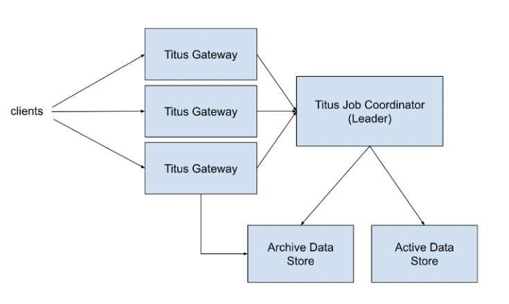
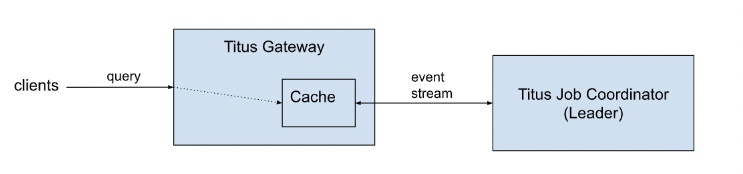

之前就学习过一致性哈希的知识，最近看到一篇 Netflix 的blog，介绍了一致性哈希在 Gateway 的应用，所以整理一下阅读中的内容。
Titus 是 Netflix cloud 的容器runtime。它现在已经从 Mesos 转移到了 K8s 中。随着业务发展，Titus 也需要做一些横向 scale。这篇文章介绍了应该如何通过横向拓展来应付大量的 API 调用。
通过在 API gateway 层引入了一个缓存机制。使得可以从原来的高负载的单节点 leader 网关，转换到具有数据一致性的多节点网关。而且，数据一致性是能够获得严格保证的，不管 gateway 的 client 以任意顺序，访问任意节点，获得的数据都是一致的。
Overview
在单个集群的视角来看，大致的架构图：

Active Data 包括现在正在运行的 job 和 task。
Titus Job Coordinator 是一个被选举出来的 leader，同时负责管理 Active Data的状态。
Titus Gateway 负责处理 client 的请求。一个请求可能是创建一个 job，或者是对 Active Data的查询，或者是查询 Archive Store的查询。所有的请求，会在多个 Titus Gateway 节点之间有 LB，而且所有的read都是一致的。而所有的write，都需要经过 Leader，如果 Leader 故障，则无法写入。
关于Leader 的状态管理：
当一个新的 leader 被选举出来之后，它会从持久化存储中读取所有的数据。在它的内存数据被更新之前，它会将数据写入到 Active Data Store中存储。
当 job 或者 task 完成之后，他们对应的数据会首先写入到 Archive Data Store中，然后才从Active Data Store和 leader 的内存中删除。
在最初的系统中，所有访问Active Data 的请求，都是由一个单节点Titus Job Coordinator处理的。它能够实现只提供最新的数据，而且不会遇到read-your-wirte或者是monotonice-read等一致性模型中的问题。
read-your-writes consistency
如果一个程序能够处理对于数据 X 的写入操作，那么它一定可以正常响应对于数据 X 的读操作
Monotonic read consistency
如果一个程序能够读取到数据 X，那么它一定能够成功读取到数据 X 或者是比 X 更加新的值。它保证了只要程序在时间 t 能够读到 X 值，那么这个程序一定不会返回旧版本的值。
Titus API上的数据一致性是非常好的，因为它简化了客户端的实现。因果一致性，包括read-your-wirte和monotonice-read，使得无需在客户端实现同步机制。在PACELC条款中，我们选择了PC/EC，并拥有与我们以前的系统相同的写的可用性水平，同时提高了读的可用性。
Fully ACID systems such as VoltDB/H-Store and Megastore are PC/EC: they refuse to give up consistency, and will pay the availability and latency costs to achieve it. BigTable and related systems such as HBase are also PC/EC.
可以理解为，他们的方案在为了达到数据一致性，而牺牲了一部分的可用性，同时可能会带来一些延迟
例如，一个workflow批处理编排系统可能会在一个 workflow中创建多个 job。在 job创建之后，它会负责监控 job 的运行状态。如果系统创建了一个新的 job，然后马上发起一个 job 状态的查询，假设系统中存在着数据传播滞后（这是很常见的），那么系统就必须要针对实现一套机制来跟踪 job 的状态，例如超时重试等。但是 Titus API 的设计是只反映最新的数据状态，所以在客户端侧不需要实现这些东西。
遇到的问题
随着流量的上涨，单节点的 leader 开始变得不堪重负。我们开始做出调整：将所有的请求交给Titus Gateway（多节点）处理，同时，最初的一致性还是需要保证的。设计就变成了这样：
新的设计方案
来自Titus Job Coordinator的状态通过一个持久的stream连接进行复制，event传播的延迟很低。可以通过一个协议监控Titus Job Coordinator缓存的一致性水平，并保证客户总是收到最新的数据版本。缓存与当前的Leader进程保持同步。当发生故障时（由于当前Leader的节点故障或系统升级），从新选出的Leader那里加载新的快照，取代以前的缓存状态。这样，处理客户端请求的Titus Gateway就可以横向扩展了。
如何保证 cache 是最新的
对于那些从一开始就建立了一致的数据版本计划的系统来说，这是一个简单的答案，并且可以让客户端来遵循既定的协议。Kubernetes就是一个很好的例子。每个对象和每个从Kubernetes集群读取的集合都有一个唯一的revision，这是一个单调增长的数字。用户可以请求自上次收到的revision以来的所有变化。
在我们的案例中，我们不想改变API协议，并对我们的用户施加额外的限制和要求。这样做需要大量的迁移工作，把所有的客户从旧的API上移走。根据我们的经验，这样的迁移需要不小的工作量，尤其是迁移的时间表并不完全在我们的控制之中。
为了履行现有的API协议，我们必须保证，对于在时间T₀收到的请求，返回给客户端的数据是从一个缓存中读取的，并且该缓存一定包含了Titus Job Coorinator 在时间T₀之前的所有状态更新。
也就是说，在T₀的请求收到那一刻开始，到 Titus Gateway 返回数据之间，Titus Gateway 必须同步等待 Titus Job Coordinator将所有的 state change event 发送到 Cache。并且同步完成。
在 Titus Gateway 和 Titus Job Coordinator 之间的数据传递如下：
每个阶段有着不同的速度。
由 Event Source 产生的事件可能在任意阶段被缓冲（可理解为 Event 已经到达，但是在 buffer 中等待被发送。）。此外，由于从Titus Gateway到Titus Job Coordinator的每个event stream 都有各自独立的管道，每个网关实例中的缓存状态可能有很大的不同。
让我们假设一个事件序列E₁...E₁₀，以及它们在时间T₁的两个Titus Gateway实例管道中的位置：
如果一个客户端在T₁的时候请求Titus Gateway 2，它将读取E₈版本的数据。如果它立即向 Titus Gateway 1发出请求，那么相对于其他 gateway 来说，那里的缓存是滞后的，所以客户端可能会读到一个较早版本的数据。
在这两种情况下，缓存中的数据都不是最新的。如果一个客户端在时间T₀创建了一个新的对象，并且该对象的值被事件更新E₁₀捕获，那么这个对象在时间T₁就会在两个网关缓存中miss。对于成功完成创建请求的客户端来说，后续的查询却返回了一个未找到的错误，这是个非预期的结果（违反read-your-write）。
解决方法是flush所有在时间T₁之前创建的事件，并强迫客户等待缓存接收所有事件。这项工作可以分成两个不同的步骤，每个步骤都有自己独特的解决方案。
实现细节
两种策略：
- Titus Gateway <-> Titus Job Coordinator 在这两者之间添加一个同步的通信协议.
- 在单个服务器进程中使用一个单调时间源，如Java的nano time。Java的纳米时间被用作JVM中的逻辑时间，为JVM进程中发生的事件定义一个顺序。或者，一个基于原子整数值生成器的解决方案也足够了，它可以为事件排序。有了本地的逻辑时间源，就避免了分布式时钟同步的问题。（引入一种偏序关系 happen-before）
如果Titus Gateway 在没有同步步骤的情况下订阅了Titus Job Coordinator的事件流，那么数据滞后的数量将无法估计。为了保证Titus Gateway 收到所有发生在某个时间Tₙ的状态更新，两个服务之间必须有同步机制。下面是我们实现的同步协议：
- Titus Gateway 收到一个 client 请求 ( queryₐ ).
- Titus Gateway 向本地缓存查询最新的数据.
- Titus Gateway 的本地缓存记录下本地的逻辑时间，然后通过一个
keep-alive将这个本地时间发送给 Titus Job Coordinator (keep-aliveₐ). - Titus Job Coordinator 将 request 存储下来，同时将收到 request 的本地时间 Tₐ 也存储起来 ( KAₐ, Tₐ ).
Titus Job Coordinator 向 Titus Gateway发送状态更新，直到前者观察到一个状态更新事件（例如 E3），并且其时间戳超过本地逻辑时间（E1，E2）.
这里首先要理解的一点：Coordinator会将 write 操作的事件存放在Event Stream中。处理 query 的时候，需要去 apply 这些 Event，类似于一个 EventSource 系统，通过 apply 所有的 Event得到系统某一刻的状态。
然后还有一个时钟先后关系，Coordinator需要确定的是：发送出去的 Event，一定是在本地时间Tₐ 之前的 Event。这时, Titus Job Coordinator 发送一个 keep-alive 的 ACK (KAₐ keep-alive ACK).
Titus Gateway 收到keep-alive ACK，因此知道它的本地缓存包含到keep-alive请求发送时发生的所有状态变化。
此时，Titus Gateway 的本地缓存获取到了最新的数据，可以返回 client 的查询请求 ( responseₐ ).
上面的过程
性能测试
总结
在我们以前的系统达到垂直扩展的极限后，我们很高兴能实施一个真正的解决方案，为Titus的只读API提供（实际意义上的）无限扩展性。我们能够实现更好的尾部延迟，在流量低的时候，只需牺牲一点中位延迟，并获得了横向扩展我们的API网关处理层的能力，以处理流量的增长，而无需改变API客户端。升级过程是完全透明的，没有一个客户在迁移期间和之后观察到API行为的任何异常或变化。
这里描述的机制可以应用于任何依赖单领导选举的组件作为管理数据的真实来源的系统，其中数据适合在内存中，并且延迟较低。
至于现有技术，文献中对缓存一致性协议有大量的描述，包括在多处理器架构（Adve & Gharachorloo, 1996）和分布式系统（Gwertzman & Seltzer, 1996）中。我们的工作符合Gwertzman和Seltzer（1996）在他们的调查报告中所探讨的client polling和invalidation protocols的机制。中央时间戳以促进只读 replica的线性化，这与Calvin系统（FoundationDB等系统中的现实世界实施实例）以及AWS Aurora中的replica watermarking类似。
我的个人思考
我不确定这个分布式算法是否有得到形式化验证，在逻辑上是否是正确的。而且，文中也没有给出一个分布式的测试验证。不过，就我的理解来看，这个算法基本依赖与 JVM 的单调时钟，如果 OS 的时钟发生了偏移（例如 NTP同步）不知道 JVM 会不会有影响。
如果使用类似于 Raft 这类的算法，正确性应该是没有问题的，但可能复杂度和效率就不一定是好的解决方案了。